Logistic Tracking System Design
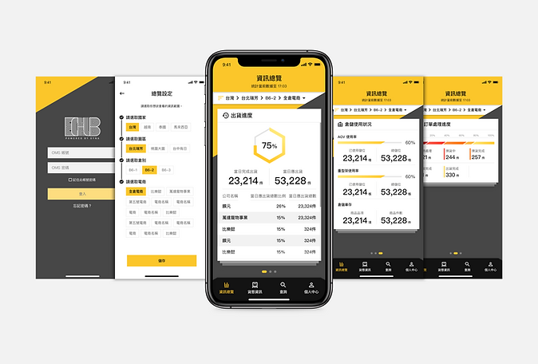
TYPE
UX Research & Mobile Design
COMPANY
Leading Logistics Infrastructure Provider, Taiwan
TEAM
6 Members (Cross-functional)
Overview
The company aimed to redefine next-generation logistics infrastructure in Asia by making the industry simple, smart, and sustainable. They required an intelligent system for Electronic Commerce Hubs that would allow staff and managers to track package status in real-time, improve operational efficiency, and respond to emergencies instantly. We built a new logistics tracking system that enables customized warehousing solutions, fitting the evolving supply chain needs of diverse industry customers.
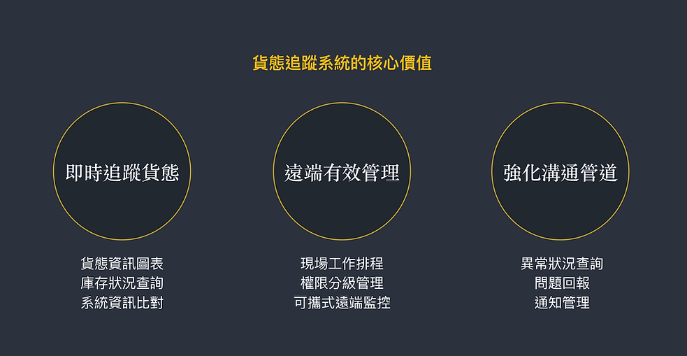
The final dashboard: providing real-time visibility across global warehouse networks.
💡 Strategic Leadership
As the Lead UX Researcher & Project Manager, I spearheaded the end-to-end research phase, from benchmark studies and field observations to defining the information architecture and wireflows. I served as the main contact window between the company and our design team, ensuring that every interaction and interface decision aligned with both user needs and business goals. Together, we successfully launched a new logistics tracking system from zero to one.
💡 Multidimensional Research Strategy
To ensure a comprehensive understanding, we identified three key stakeholders and established clear research objectives to bridge the gap between business goals and the daily reality of the warehouse floor.
1. Logistics Company
Defining key users, discovering operational goals, and determining the technical development roadmap and limitations.
2. Third-party Logistics
Analyzing working processes, scenarios, and pain points while differentiating the roles of the tracking system and on-site notice dashboards.
3. E-commerce Retailers
Understanding the needs of small businesses—tracking inventory, packaging progress, and delivery timelines to ensure customer satisfaction.

💡 Target User Profiling
The Strategic Stakeholder (CEO & Supervisors)
Executives are primarily focused on high-level updates and emergency management. They use the system both for monitoring and as a powerful sales tool to demonstrate their smart warehousing capabilities during client negotiations.
The Power User (Warehouse Managers)
Responsible for everything from production lines to shift scheduling, managers were often overwhelmed by using three or more disconnected systems. They required a single, integrated source of truth to reduce time waste and cognitive load.
The Business Customer (E-commerce Retailers)
These small businesses rely on the system to track real-time stock levels and shipment status, ensuring their customers receive orders correctly and on time.
💡 Identifying the Gaps: Key Findings
Fragmentation: Important data was scattered across disparate systems, making it nearly impossible for managers to stay updated in real-time.
Mobile Mobility: Most legacy systems lacked mobile design, preventing managers from checking progress while they were physically on the warehouse floor.
Accountability: The lack of a single contact window for clients made it difficult to assign responsibility and authority for specific orders.
💡 The Design Process: From Field to High-Fi
1. Immersive Field Studies
We visited active warehouses to observe daily operations and emergency handling. Through seven in-depth interviews, we captured the nuances of the warehouse environment, allowing us to extract deep insights for the tracking system's logic.
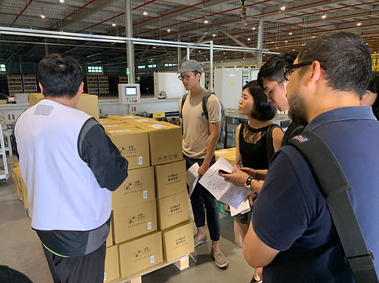
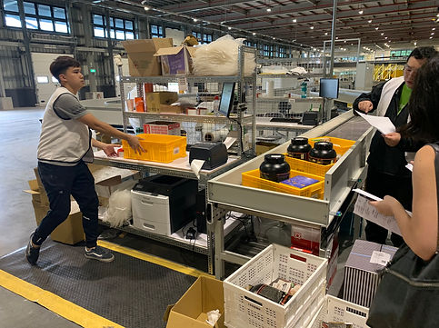
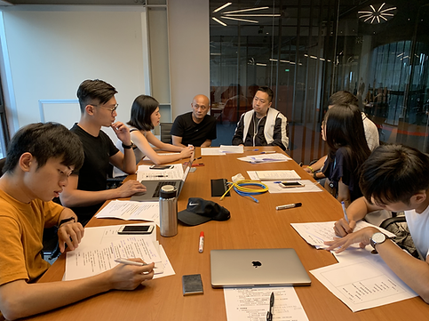
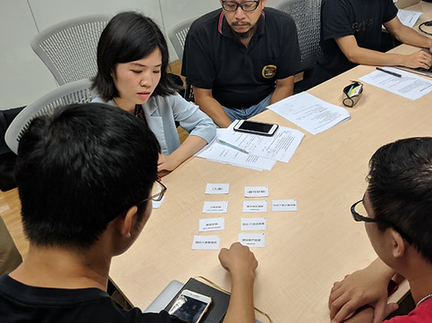
2. Visualizing User Journeys
I introduced user journey maps to visualize daily routines—hourly tasks, tool usage, and critical friction points. These maps allowed our team to see the "big picture" of logistics and define features that addressed unmet needs, like mobile real-time updates.
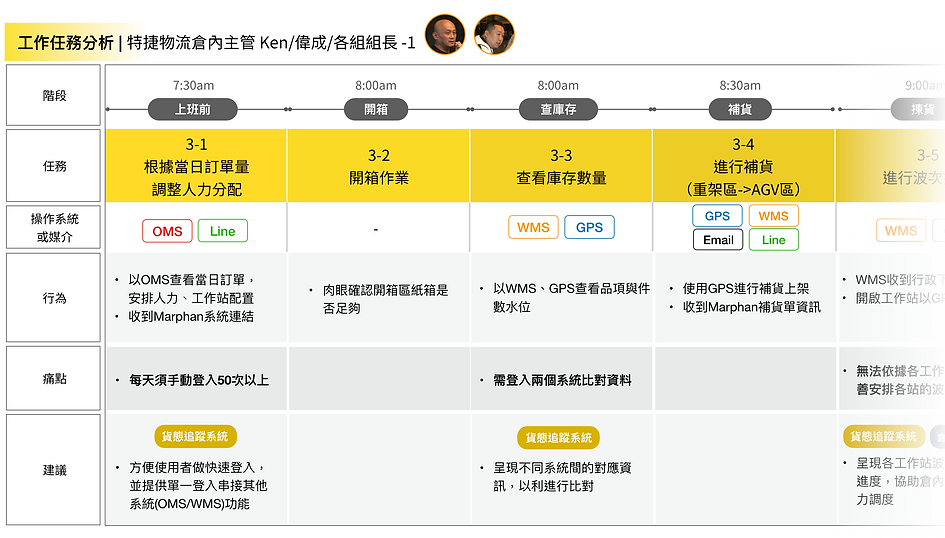
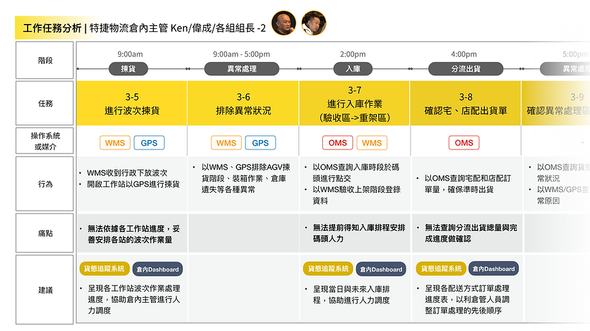
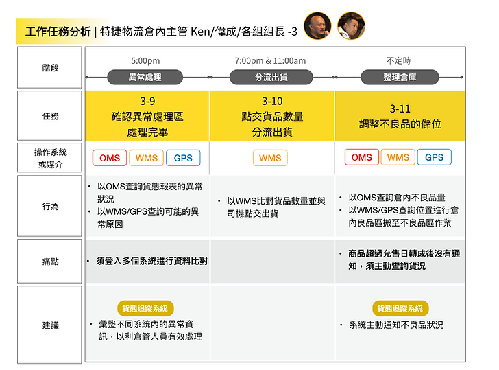
3. Strategic Feature Architecture
We prioritized features into "Core Operations" and "Advanced Management." Using card sorting data, we built a robust Information Architecture that significantly reduced cognitive load for workers navigating massive warehouse floors.

4. Logical User Flows
To ensure system stability and a seamless UX, I developed detailed flowcharts to define how functions connect in sequence. This served as the blueprint for designers to begin building the interface.
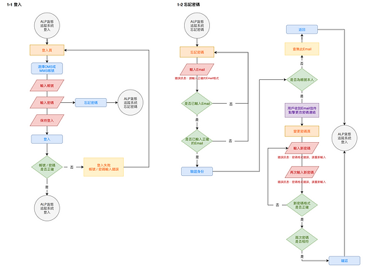
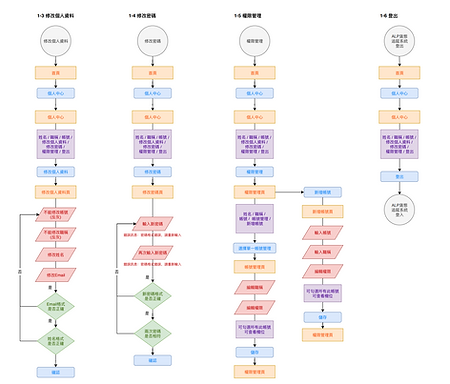
5. Lo-Fi to Hi-Fi GUI
After finalizing wireflows for complex data-heavy pages (including summary dashboards and shipment detail pages), we proposed three distinct graphic styles. The company selected the one that best represented their brand identity. We then spent a month iterating on GUI details, focusing on data visualization clarity.
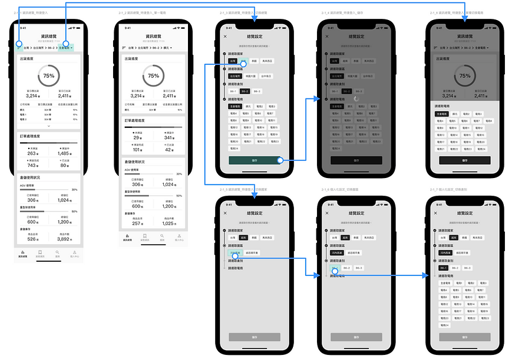
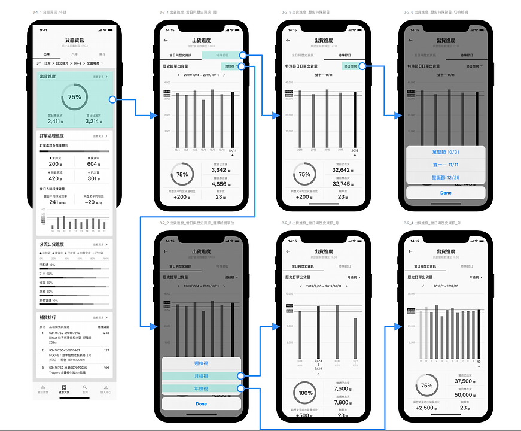
6. Handoff & Implementation
The final GUI and a comprehensive style guide were uploaded to Zeplin, ensuring that the company's engineering team could implement the system with high fidelity and consistency.
.png)
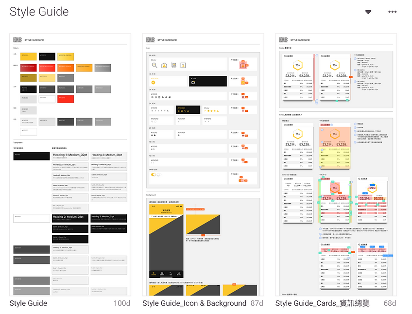
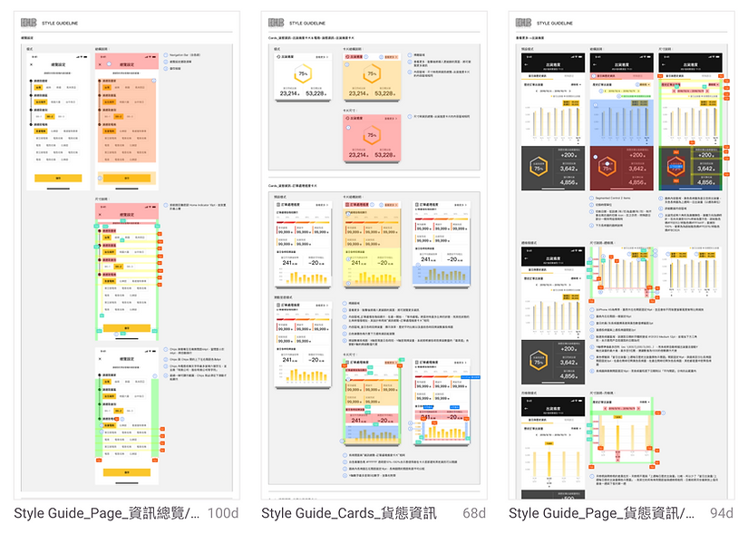
Impact
The new Logistics Tracking System successfully transitioned from a conceptual prototype into a vital tool for Electronic Commerce Hubs. By centralizing data and emergency management, the system significantly reduced response times and improved operational accuracy, fulfilling the company's vision of a smarter, more sustainable logistics future.